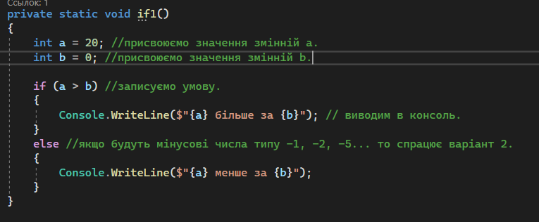
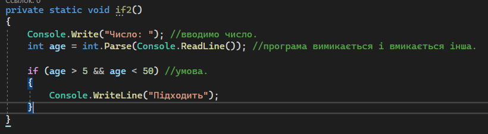
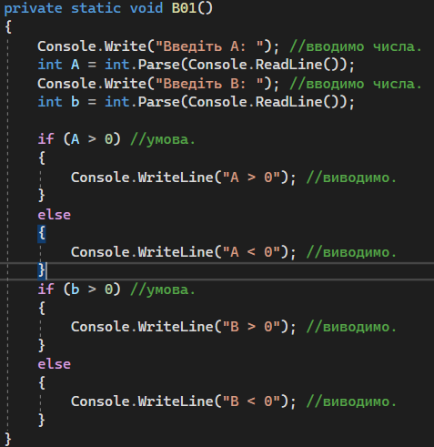

Else - це типу або або коли ми записуєму умову в if і if виберає дію. Якщо казати просто else це варіант який може вибрати if.
Завдання 1
Дано ціле число A.
Якщо воно більше 0 вивести Більше, якщо менше 0, вивести Менше.

Завдання 2
Дано ціле число A.
Якщо воно більше 5 та менше 50 вивести Підходить, в інших випадках нічого не виводити.

Завдання 3
Дано цілі числа A та B.
Якщо A та B більше 0 вивести Більше.
Якщо A менше 0, вивести A менше.
Якщо B менше 0, вивести B менше.
Якщо A та B менше 0, вивести Менше.
